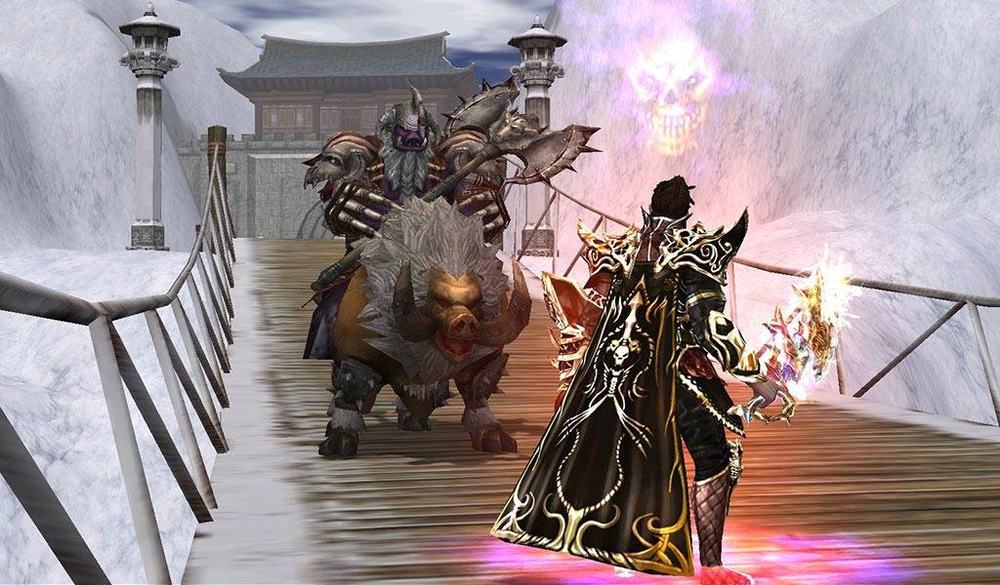
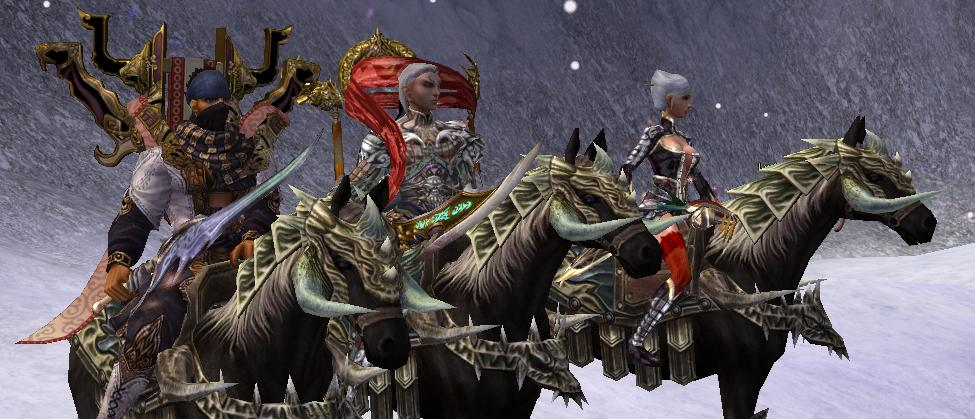
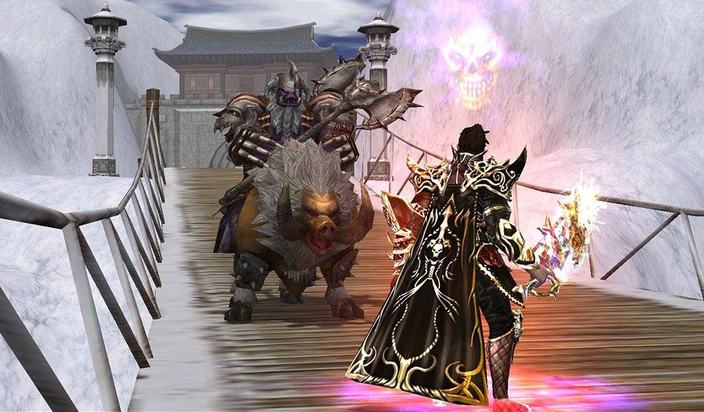
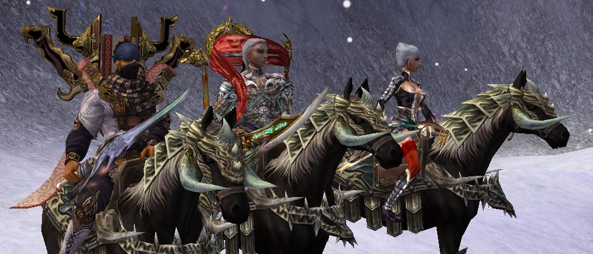

Scoprite un universo di miti e arti marziali, dove il destino è intrecciato con il potere dei Metin. "Metin2", un affascinante gioco MMORPG creato da Ymir Entertainment, vi invita a immergervi in una terra di avventura e mistero ispirata alla mitologia orientale. Nel vasto mondo di Manchuria, il vostro destino si intreccerà con il coraggio e la magia mentre affronterete sfide epiche e scoprirete antichi segreti.
In "Metin2", vestirete i panni di un giovane guerriero chiamato a difendere la terra dalle oscure minacce dei Metin, pietre misteriose che hanno portato caos e distruzione al mondo. Scegliete la vostra classe tra guerriero, ninja o chamano e iniziate il vostro viaggio verso la grandezza. L'addestramento nelle arti marziali sarà essenziale per dominare le abilità di combattimento e sconfiggere i potenti nemici che vi attendono.
Esplorate una vasta gamma di paesaggi mozzafiato, dalle maestose montagne alle regioni costiere pittoresche, ciascuna con la propria bellezza e pericoli unici. Attraversate foreste oscure, antichi templi e città fiorenti mentre compite missioni avvincenti, sfidate mostri leggendari e risolvete enigmi intricati che svelano la storia di Manchuria.
Una caratteristica distintiva di "Metin2" è il sistema di arti marziali, che offre la possibilità di specializzarsi in varie discipline. Potete padroneggiare l'uso delle spade, dei pugnali, degli archi e altro ancora, plasmando il vostro stile di combattimento unico. L'evoluzione del vostro personaggio è nelle vostre mani, e ogni abilità acquisita vi avvicinerà alla perfezione nelle arti marziali.
"Metin2" va oltre il combattimento, offrendo un mondo sociale ricco di interazioni. Unitevi a gilde per condividere risorse e sconfiggere i nemici in epiche guerre di gilda. Partecipate a sfide in PvP e PvE, commerciate oggetti preziosi e stringete legami con altri giocatori in un ambiente dinamico e coinvolgente.
Con grafiche dettagliate, effetti visivi coinvolgenti e un'atmosfera unica, "Metin2" vi catapulterà in un mondo di avventura, sfide e crescita personale. Preparati a intraprendere il tuo viaggio nell'universo di "Metin2", dove la leggenda e il destino si intrecciano in un'esperienza epica di gioco.
Esistono anche dei server privati di "Metin2" dove l'exp, il drop e il gioco in sè risulta più facile. Di seguito ho inserito un link che vi indirizza a un forum di 'Inforge' dove ci sono i più popolari server privati.
 


